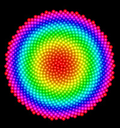

Java 3D rendering of a
Fibonacci spiral with 1000 points.
The Fibonacci Spiral Model draws a geometric spiral whose growth is regulated by the Fibonacci series. Its growth parallels the rapid growth of the series itself. The golden spiral gets wider (or further from its origin) by a factor of φ for every quarter turn it makes. To produce a uniform distribution in the plane of the spiral, points are separated by the golden angle.
This model is designed to test OSP 3D drawing implementations in EJS. The sprial can be drawn using the Simple 3D implementation that run using only standard Java. The Java 3D implementation of the library provides superior hardware-acclerated drawing of geometric objects such as spheres, but requires that the Java 3D package. This package can be downloaded from the Java community website.
The Fibonacci Spiral Model was developed by Wolfgang Christian using the Easy Java Simulations (EJS) version 4.3.7 authoring and modeling tool.
You can examine and modify a compiled EJS model if you run the model (double click on the model's jar file), right-click within a plot, and select "Open Ejs Model" from the pop-up menu. You must, of course, have EJS installed on your computer. Information about Ejs is available at: <http://www.um.es/fem/Ejs/> and in the OSP comPADRE collection <http://www.compadre.org/OSP/>.